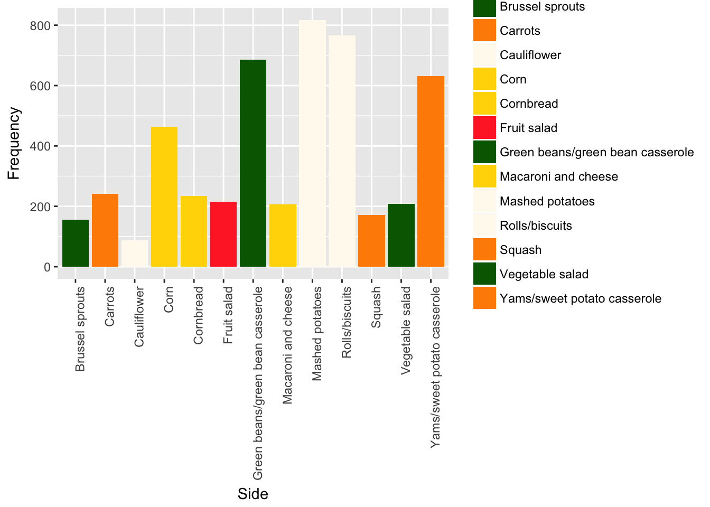
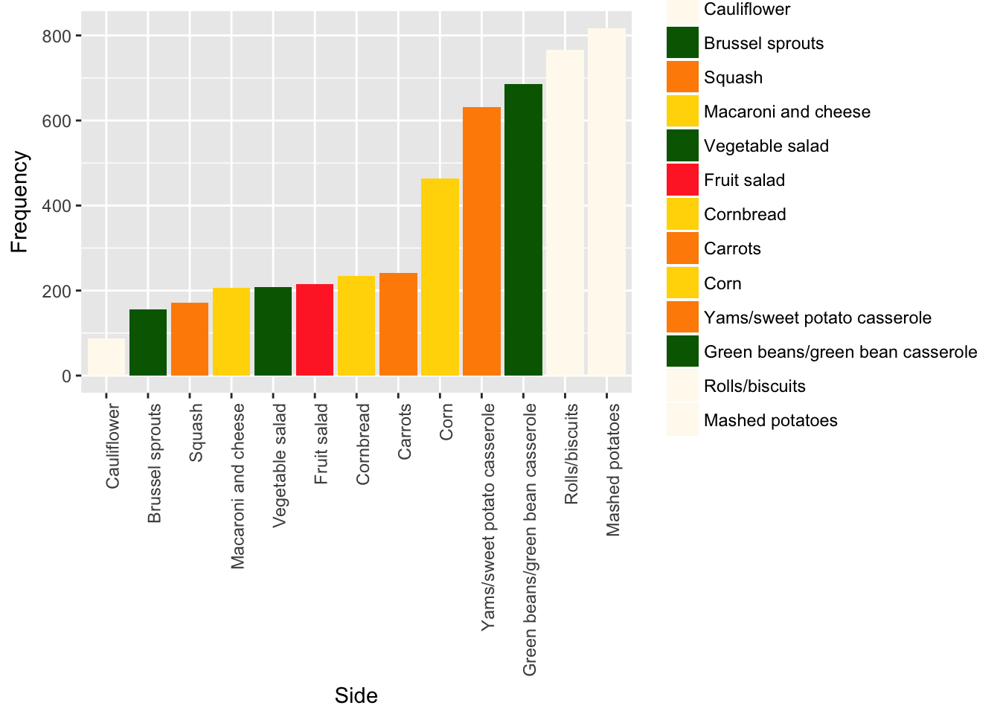

2 ggplot2
2.1 +.gg ()
2.2 aes ()
2.3 aes_ ()
2.4 aes_colour_fill_alpha ()
2.5 aes_group_order ()
2.6 aes_linetype_size_shape ()
2.7 aes_position ()
2.8 annotate ()
2.9 annotation_custom ()
2.10 annotation_logticks ()
2.11 annotation_map ()
2.12 annotation_raster ()
2.13 autoplot ()
2.14 borders ()
2.15 coord_cartesian ()
2.16 coord_fixed ()
2.17 coord_flip ()
2.18 coord_map ()
2.19 coord_polar ()
2.20 coord_trans ()
2.21 cut_interval ()
2.22 diamonds ()
2.23 economics ()
2.24 expand_limits ()
2.25 facet_grid ()
2.26 facet_wrap ()
2.27 faithfuld ()
2.28 fortify ()
2.29 geom_abline ()
2.30 geom_bar ()
2.31 geom_bin2d ()
2.32 geom_blank ()
2.33 geom_boxplot ()
2.34 geom_contour ()
2.35 geom_count ()
2.36 geom_crossbar ()
2.37 geom_density ()
2.38 geom_density_2d ()
2.39 geom_dotplot ()
2.40 geom_errorbarh ()
2.41 geom_freqpoly ()
2.42 geom_hex ()
2.43 geom_jitter ()
2.44 geom_label ()
2.45 geom_map ()
2.46 geom_path ()
2.47 geom_point ()
2.48 geom_polygon ()
2.49 geom_qq ()
2.50 geom_quantile ()
2.51 geom_raster ()
2.52 geom_ribbon ()
2.53 geom_rug ()
2.54 geom_segment ()
2.55 geom_smooth ()
2.56 geom_spoke ()
2.57 geom_violin ()
2.58 ggplot ()
2.59 ggproto ()
2.60 ggsave ()
2.61 ggtheme ()
2.62 guides ()
2.63 guide_colourbar ()
2.64 guide_legend ()
2.65 hmisc ()
2.66 labeller ()
2.67 labellers ()
2.68 label_bquote ()
2.69 labs ()
2.70 lims ()
2.71 luv_colours ()
2.72 margin ()
2.73 mean_se ()
2.74 midwest ()
2.75 mpg ()
2.76 msleep ()
2.77 position_dodge ()
2.78 position_identity ()
2.79 position_jitter ()
2.80 position_jitterdodge ()
2.81 position_nudge ()
2.82 position_stack ()
2.83 presidential ()
2.84 print.ggplot ()
2.85 print.ggproto ()
2.86 qplot ()
2.87 resolution ()
2.88 scale_alpha ()
2.89 scale_colour_brewer ()
2.90 scale_colour_gradient ()
2.91 scale_colour_grey ()
2.92 scale_colour_hue ()
2.93 scale_continuous ()
2.94 scale_date ()
2.95 scale_identity ()
2.96 scale_linetype ()
2.97 scale_manual ()
This recipe is available including rendered plots as an Rpubs here:
http://rpubs.com/hmgeiger/384663
This Github contains just the code for now, not including rendered plots.
Read in a CSV file with survey data about Thanksgiving.
More info available here:
https://github.com/fivethirtyeight/data/tree/master/thanksgiving-2015
csv_link <- "https://raw.githubusercontent.com/fivethirtyeight/data/master/thanksgiving-2015/thanksgiving-2015-poll-data.csv"
thanksgiving <- read.csv(csv_link,header=TRUE,stringsAsFactors=FALSE,check.names=FALSE)Filter only for individuals that celebrate Thanksgiving, after cleaning up some column names.
colnames(thanksgiving)[2] <- "Celebrates_Thanksgiving"
colnames(thanksgiving)[c(25,38,50)] <- c("Which of these side dishes aretypically served at your Thanksgiving dinner? Please select all that apply. - Other (please specify again)",
"Which type of pie is typically served at your Thanksgiving dinner? Please select all that apply. - Other (please specify again)",
"Which of these desserts do you typically have at Thanksgiving dinner? Please select all that apply. - Other (please specify again)")
thanksgiving <- thanksgiving %>% filter(Celebrates_Thanksgiving == "Yes")Select columns corresponding to side dishes, minus “Other”.
Then, count number of people who selected each side.
side_dish_columns <- grep('Which of these side dishes aretypically served at your Thanksgiving dinner?',colnames(thanksgiving),value=TRUE)
side_dish_columns <- side_dish_columns[grep('Other',side_dish_columns,invert=TRUE)]
side_dish_frequency <- data.frame(Side = rep(NA,times=length(side_dish_columns)),
Frequency = rep(NA,times=length(side_dish_columns)))
for(i in 1:length(side_dish_columns))
{
side_name <- str_replace_all(side_dish_columns[i],
pattern='Which of these side dishes aretypically served at your Thanksgiving dinner\\? Please select all that apply\\. - ',
replace='')
side_dish_frequency[i,] <- c(side_name,length(which(thanksgiving[,side_dish_columns[i]] != "")))
}
side_dish_frequency$Frequency <- as.numeric(side_dish_frequency$Frequency)Make a barplot of the frequency of different sides, minus “Other”.
ggplot(side_dish_frequency,aes(Side,Frequency)) +
geom_bar(stat="identity") +
theme(axis.text.x = element_text(angle = 90, hjust = 1))
Now use scale_fill_manual to color each bar by a color appropriate to the food.
Use colors here as a guide: http://www.stat.columbia.edu/~tzheng/files/Rcolor.pdf
Put in colors based on order sides appear in side_dish_frequency.
Let’s color fruit salad as red, since may have watermelon, strawberry, etc.
ggplot(side_dish_frequency,aes(Side,Frequency,fill=Side)) +
geom_bar(stat="identity") +
theme(axis.text.x = element_text(angle = 90, hjust = 1)) +
scale_fill_manual(values = c("darkgreen","darkorange","floralwhite","gold","gold","firebrick1","darkgreen","gold","floralwhite","floralwhite","darkorange","darkgreen","darkorange"))
Sort by frequency, then adjust the order of the color vector accordingly.
color_per_side <- c("darkgreen","darkorange","floralwhite","gold","gold","firebrick1","darkgreen","gold","floralwhite","floralwhite","darkorange","darkgreen","darkorange")
color_per_side <- color_per_side[order(side_dish_frequency$Frequency)]
side_dish_frequency$Side <- factor(side_dish_frequency$Side,
levels=side_dish_frequency$Side[order(side_dish_frequency$Frequency)])
ggplot(side_dish_frequency,
aes(Side,Frequency,fill=Side)) +
geom_bar(stat="identity") +
theme(axis.text.x = element_text(angle = 90, hjust = 1)) +
scale_fill_manual(values = color_per_side)
We find that the two most popular Thanksgiving sides are both white.
What if we use shape_colour_manual instead, and specify color by side instead of fill by side?
ggplot(side_dish_frequency,
aes(Side,Frequency,colour=Side)) +
geom_bar(stat="identity",fill="lightgrey") +
theme(axis.text.x = element_text(angle = 90, hjust = 1)) +
scale_colour_manual(values = color_per_side)
Now the color of the border of the bars will change based on the colors we have specified.
Using “colour” instead of “fill” probably isn’t what we want for a barplot. But it might be useful for other types of plots (like scatterplots with a hollow dot for the points).
2.98 scale_shape ()
2.99 scale_size ()
2.100 scale_x_discrete ()
2.101 seals ()
2.102 sec_axis ()
2.103 stat_ecdf ()
2.104 stat_ellipse ()
2.105 stat_function ()
2.106 stat_identity ()
2.107 stat_summary_2d ()
2.108 stat_summary_bin ()
2.109 stat_unique ()
2.110 theme ()
2.111 theme_get ()
2.112 txhousing ()
2.113 ggiraph
There is a complement to the ggplot2 function - ggiraph. Ggiraph allows the user to turn their normal ggplot graphs into interactive graphics.
Some usage of the ggiraph functions are:
- geom_bar_interactive
- geom_boxplot_interactive
- geom_histogram_interactive
- geom_line_interactive
- geom_map_interactive
- geom_path_interactive
- geom_point_interactive
- geom_polygon_interactive
- geom_rect_interactive
- geom_segment_interactive
- geom_text_interactive
- geom_tile_interactive
The ggiraph package lets you add more aesthetics to your ggplot graph.
tooltip: column of dataset that contains tooltips to be displayed when mouse is over elements.
data_id: column of dataset that contains id to be associated with elements
The ggiraph function is called using library(ggiraph).
Tooltips Tooltips can be created using the following example:
# Need to debug and get rid of eval=FALSE above once working
library(tidyverse)
library(ggiraph)
library(fueleconomy)# Need to debug and get rid of eval=FALSE above once working
ggexample <- ggplot(vehicles, aes(factor(vehicles$year), vehicles$hwy)) +
geom_boxplot_interactive(aes(tooltip = year))
ggiraph(code = print(ggexample))When the users mouse hovers over an item, the tooltip will be displayed - in this case “Year”.
Hover effects can be created using the following example:
# Need to debug and get rid of eval=FALSE above once working
ggexample <- ggplot(vehicles, aes(factor(vehicles$year), vehicles$hwy, color = hwy)) +
geom_boxplot_interactive(aes(tooltip = year, data_id = year))
ggiraph(code = print(ggexample))As you can see in the example above, the boxs change color on when the users mouse hovers over the item.
More information can be found here: http://rpubs.com/nschettini/386363